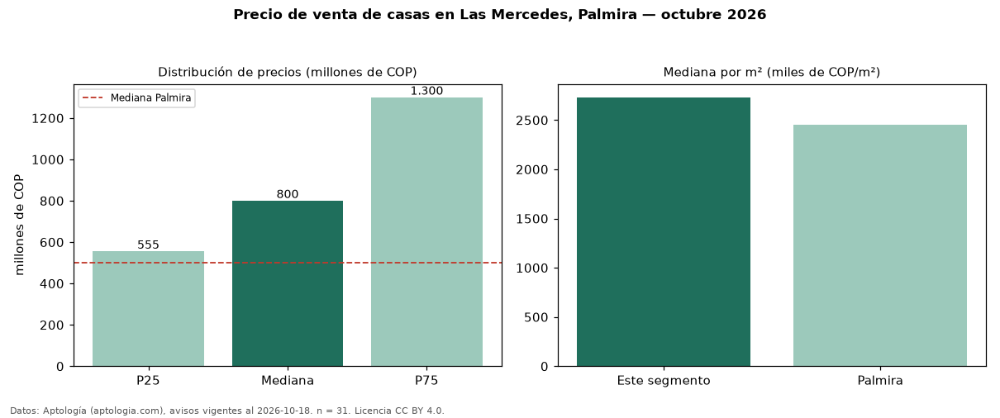

Precio de venta de casas en Las Mercedes, Palmira — octubre 2026
COP 800 millones es el precio mediano de casas en venta en Las Mercedes, Palmira (n = 31 avisos). Frente a la mediana de Palmira para casas (COP 500 millones), queda 60 % por encima. Por metro cuadrado, la mediana es COP 2,73 millones/m² (n = 31 avisos con área), 11 % por encima de Palmira (COP 2,45 millones/m²). El área mediana anunciada es 319 m². El segmento con más oferta es el de 3 o más habitaciones (30 avisos, mediana COP 800 millones). La mitad central de los avisos va de COP 555 millones a COP 1,30 mil millones (razón 2,3), una dispersión alta. El estrato más frecuente es 5 (74 % de los avisos con estrato). Datos: Aptología (aptologia.com), CC BY 4.0 — https://www.aptologia.com/casas-en-venta/palmira/las-mercedes. Archivos: PDF, CSV con las cifras y gráfica PNG.

| Avisos únicos | 31 |
|---|---|
| Percentil 25 | COP 555.000.000 |
| Mediana | COP 800.000.000 |
| Percentil 75 | COP 1.300.000.000 |
| Mediana por m² | COP 2.730.769 |
Fuente: avisos vigentes de portales inmobiliarios recopilados por Aptología, deduplicados (mínimo 30 avisos únicos por celda). Precios pedidos, no cerrados. Fecha: 2026-10-18.